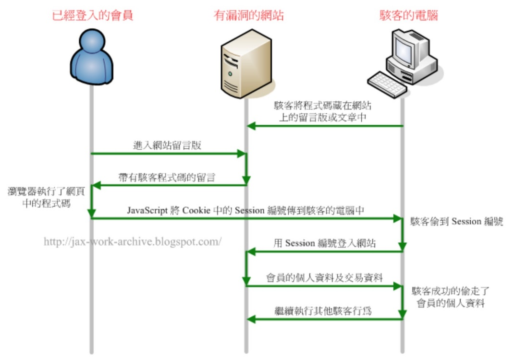
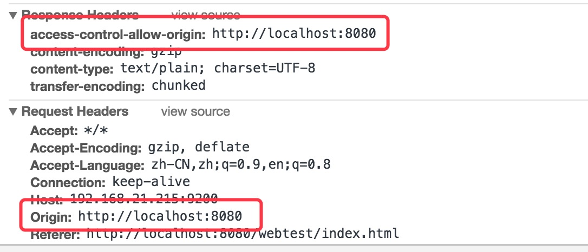

Session 是什么
在计算机科学领域来说，尤其是在网络领域，会话（session）是一种持久网络协议，在用户（或用户代理）端和服务器端之间创建关联，从而起到交换数据包的作用机制，session在网络协议（例如telnet或FTP）中是非常重要的部分。（wikipedia）
结合应用场景来说，当用户登录成功后，server端需要记录用户的状态，需要用某种机制来识别具体的用户，这个机制就是Session。
用java开发web服务时，通常会在server端新建session，并存储在内存中，会在session放入一些必要的属性，例如username。
但是HTTP通常是短链接，并且是无状态的，server端是如何知道发起者是否已经登录的？所以通常会有个标识，该标识能够证明”我”是谁。
在JAVA中，标识通常为JSESSIONID，PHP中为PHPSESSID。
标识
在Session机制中，需要个标识证明请求者的身份，最简单的方式就是透明化SESSIONID，直接将sessionid放在url上。例如：
+————————————————————+ | <http://www.xxx.com/xxx_app;jsessionid=xxxxxxxxxx?a=x&b=x | | | | # request.getParameter()方法还取不到jsessionid | +————————————————————+
但是这种方法很不好，url是明文并且很容易被劫持，如果B获得了A的sessionid，那B就能假冒A发起请求了。该方法太过简陋，也不建议被使用。
再一个方案就是用的很广泛的cookie了。对于web开发，session和cookie一点也不陌生，随口就会说session存储在服务端，cookie存储在客户端。开发购物车将物品信息放在cookie中，方便用户下次点开还能看到购物车中没有购买的内容。
同购物车的例子相同，在session机制中，cookie担当的就是存储session标识的责任。下面以登录为例：
当登录成功后，server会在 response headers中set cookie。让浏览器将sessionid记录下来。（key为session，sessionid的标识，可自己定义）
{width=”5.768055555555556in” height=”0.9881944444444445in”}
当登录后请求其他页面时，可以查看requeset headers，cookie中标识了session的id。
{width=”5.768055555555556in” height=”1.604861111111111in”}
当客户端携带cookie发起请求时，服务端会解析cookie内容，并通过sessionid找到相应的session。
或者通过curl直接设置cookie请求，可以直接获得session。
curl -i --cookie "SESSION=3e4fb030-c085-4c2c-bc31-6a9d3ac6c115;" http://localhost:8080/webtest/test ——————————————————————————————————–
XSS攻击
跨站脚本（英语：Cross-site scripting，通常简称为：XSS）是一种网站应用程序的安全漏洞攻击，是代码注入的一种。它允许恶意用户将代码注入到网页上，其他用户在观看网页时就会受到影响。这类攻击通常包含了HTML以及用户端脚本语言。
*Cross-site scripting的英文首字母缩写本应为CSS，但因为CSS在网页设计领域已经被广泛指层叠样式表（Cascading Style Sheets），所以将Cross（意为”交叉”）改以交叉形的X做为缩写。但早期的文件还是会使用CSS表示Cross-site scripting。
{width=”4.84375in” height=”3.376466535433071in”}
以上最关键的一部是通过JavaScript从Cookie中获得Session编号。例如如下代码：
{width=”5.768055555555556in” height=”1.1661767279090114in”}
先放入将username放入cookie中，再通过alert将cookie内容数据。结果如下：
{width=”5.768055555555556in” height=”2.3881944444444443in”}
可以看到输出的内容有_ga、manager、username三个cookie的内容。
说明刚刚放入的username直接被打印了出来。
*manager是用go语言的gin框架开发的web服务的sessionid。HttpOnly默认为false。
再查看一下浏览器中的cookie内容。
{width=”5.768055555555556in” height=”1.0520833333333333in”}
实际内容的SESSION没有被打印出来，而username则被js读取出来了。所以为了安全，需要将HttpOnly设置为true，设置完该参数后，js将无法读取该cookie的值。
CORS
CORS（Cross-Origin Resource Sharing 跨源资源共享），当一个请求url的协议、域名、端口三者之间任意一与当前页面地址不同即为跨域。
No 'Access-Control-Allow-Origin' header is present on the requested resource.
{width=”5.768055555555556in” height=”0.3034722222222222in”}
例如A域名中引入的B域名的图片，或者管理后台web端的js代码直接向ElasticSearch发起查询请求。ElasticSearch默认是关闭了该功能。
跨域请求和Ajax技术都会极大地提高页面的体验，但同时也会带来安全的隐患，其中最主要的隐患来自于CSRF（Cross-site request forgery）跨站请求伪造
{width=”5.768055555555556in” height=”3.418360673665792in”}
CSRF攻击的大致原理是：
-
用户通过浏览器，访问正常网站A（例如某银行），通过用户的身份认证（比如用户名/密码）成功A网站。
-
网站A产生Cookie信息并返回给用户的浏览器；
-
用户保持A网站页面登录状态，在同一浏览器中，打开一个新的TAB页访问恶意网站B；
-
网站B接收到用户请求后，返回一些攻击性代码，请求A网站的资源（例如转账请求）；
-
浏览器执行恶意代码，在用户不知情的情况下携带Cookie信息，向网站A发出请求。
-
网站A根据用户的Cookie信息核实用户身份（此时用户在A网站是已登录状态），A网站会处理该请求，导致来自网站B的恶意请求被执行。
分析上面的情景，原因就是当用户在B网站发起对A网站的操作是，A并没有拒绝，也就是信任了B网站，所以导致了问题。
通过上面就能获知为什么ES为什么关闭了该功能。当管理员登录了ES后，再登录一个恶意网页，网页中向ES发起delete操作，那么数据也就没了。
目前我们为了对ES进行了简单的cors开启，此类开启也就信任的所有的网站了，不够安全。
+———————————–+ | http.cors.allow-origin: "/.*/" | | | | http.cors.enabled: true | +———————————–+
对参数应该更加细化的配置，保证安全，例如只允许GET方法。
http.cors.allow-origin Which origins to allow. Defaults to no origins allowed. If you prepend and append a / to the value, this will be treated as a regular expression, allowing you to support HTTP and HTTPs. for example using /https?:\/\/localhost(:[0-9]+)?/ would return the request header appropriately in both cases. * is a valid value but is considered a security risk as your Elasticsearch instance is open to cross origin requests from anywhere. —————————– —————————————————————————————————————————————————————————————————————————————————————————————————————————————————————————————————————————————————- http.cors.max-age Browsers send a "preflight" OPTIONS-request to determine CORS settings. max-age defines how long the result should be cached for. Defaults to 1728000 (20 days) http.cors.allow-methods Which methods to allow. Defaults to OPTIONS, HEAD, GET, POST, PUT, DELETE. http.cors.allow-headers Which headers to allow. Defaults to X-Requested-With, Content-Type, Content-Length. http.cors.allow-credentials Whether the Access-Control-Allow-Credentials header should be returned. Note: This header is only returned, when the setting is set to true. Defaults to false
当配置了cors后，request将会用origin表述自己的身份，response也会描述cors允许的结果。
{width=”4.791666666666667in” height=”2.0552099737532807in”}
分布式Session
如果应用只是单节点的话，用普通的内存存储session没有问题，当时当系统变成多节点的分布式了怎么办？例如下图，通常在分布式架构中，为了负载均衡请求都是随机或轮训服务器，当用户在A中登录后，再次发起请求，请求到B服务器，如果验证登录状态，则验证失败。
{width=”3.6009700349956257in” height=”2.307292213473316in”}
Session复制
session复制很容易理解，就是配置web容器让每个容器都存储session。目前Tomcat、Glassfish Cluster都能提供此功能。但是每台机器都需要存储，只适合用户数不多且服务器不多的情况。
Session集中管理
集中式管理就是将所有的Session集中起来统一管理，例如所有模块集成spring session，将session存储到Redis中，当再次请求时将会查看Redis中是否有该用户的session。
{width=”3.9166666666666665in” height=”2.262979002624672in”}
集中式管理解决多个节点的问题，但是也增加了相应的网络开销，并且存储最好使用分布式集群，否则存储挂了所有的业务都会受到影响。
基于Cookie
基于cookie是指用户对session添加内容时，server端将会把数据要求client将数据写入cookie中，这样server端什么都不用存了，用户每次请求时将cookie数据带到server端即可。
这个缺点就是cookie的承载是有限的，并且每次传输都会消耗宽带，并且存储到cookie中不安全，最好是加密。
*golang的gin框架用到的session就是这样做的。将数据序列化后写入cookie。
Session Stick
Session Stick的方式就是在多个节点的情况下，保证每次请求都落在同一台机器上，这样就没有了session校验失败的问题。
例如在Docker中使用，所有的请求都会先到Træfik，然后由他统一分发，如有用户在A上登录了，那么用户的每个请求都会活在A上。
{width=”5.768055555555556in” height=”3.337331583552056in”}
该方案的缺点就是，当A机器挂了，那么用户必须要重新登录。并且为了安全，需要保证该代理为集群模式。
Spring Session
<https://github.com/spring-projects/spring-session
spring session 提供了分布式的session，使用了集中式管理的方式，将session存储在独立的存储中，目前官方支持了redis、JDBC和apache geode。
spring session默认使用cookie传递sessionid，同样也适应了目前流行的Restful风格，可以使用http header传递sessionid。
+—————————————————-+ | GET /messages/ HTTP/1.1 | | | | Host: example.com | | | | x-auth-token: f81d4fae-7dec-11d0-a765-00a0c91e6bf6 | +—————————————————-+
在此基础之上，我们实现了spring-session-cassandra，将session数据存储在Cassandra中。
使用方法为：
- web.xml中添加配置
{width=”5.768055555555556in” height=”1.15709208223972in”}
- 添加spring配置
{width=”5.768055555555556in” height=”1.7326388888888888in”}
扩展知识
ServletContainerInitializer
javax.servlet.ServletContainerInitializer是servlet里面的一个web容器初始化的一个初始化扩展接口。通过它能够实现在web容器中进行初始化，例如注册servlet或者filtes。同时也可以免去web.xml配置文件启动web项目。
例如spring-session中添加springSessionRepositoryFilter可以使用该方法。使用springSessionRepositoryFilter可以在web.xml中注册。web.xml中注册方法如下：
+———————————————————————-+ | <filter\ | | | | <filter-name\springSessionRepositoryFilter</filter-name\ | | | | <filter-class\o | | rg.springframework.web.filter.DelegatingFilterProxy</filter-class\ | | | | </filter\ | | | | <filter-mapping\ | | | | <filter-name\springSessionRepositoryFilter</filter-name\ | | | | <url-pattern\/*</url-pattern\ | | | | </filter-mapping\ | +———————————————————————-+
也可以使用纯代码方法实现，例如官方给出的示例：
+———————————————————————-+ | //写出一个j | | ava类，继承AbstractHttpSessionApplicationInitializer，构造其中放java | | config类 | | | | public class Initializer extends | | AbstractHttpSessionApplicationInitializer { | | | | public Initializer() { | | | | super(Config.class); //spring java config | | | | } | | | | } | | | | //类实现了spring-web 包中的org.springframework.web. | | WebApplicationInitializer | | | | // WebApplicationInitializer 中就一个方法就是onStartup | | | | public abstract class AbstractHttpSessionApplicationInitializer | | implements WebApplicationInitializer { | | | | public void onStartup(ServletContext servletContext) throws | | ServletException { | | | | 省略... | | | | //这个方法中会向servletContext 中注册springSessionRepositoryFilter | | | | insertSessionRepositoryFilter(servletContext); | | | | 省略... | | | | } | | | | } | +———————————————————————-+
通过上面的代码就完成了和在web.xml中一样的filter注册功能。但是到这里就有个疑问，filter如何是注册的，onStartup 为什么会被执行？
对代码进行逆推如下：
- AbstractHttpSessionApplicationInitializer 实现了spring-web里的WebApplicationInitializer
AbstractHttpSessionApplicationInitializer 实现了WebApplicationInitializer中的onStartup方法，在onStartup方法中执行了filter注册的操作
- SpringServletContainerInitializer 对WebApplicationInitializer执行onStartup方法
在spring-web包中，有个SpringServletContainerInitializer类，代码如下：
+———————————————————————-+ | //对WebApplicationInitializer进行监控,功能是只监控WebAp | | plicationInitializer，这样在onStartup方法中获得的class都是它的实现类 | | | | \@HandlesTypes(WebApplicationInitializer.class) | | | | //实现了servlet包的ServletContainerInitializer接口 | | | | public class SpringServletContainerInitializer implements | | ServletContainerInitializer { | | | | \@Override | | | | public void onStartup(Set<Class<?\ webAppInitializerClasses, | | ServletContext servletContext) | | | | throws ServletException { | | | | List<WebApplicationInitializer\ initializers = new | | LinkedList<WebApplicationInitializer(); | | | | if (webAppInitializerClasses != null) { | | | | for (Class<?\ waiClass : webAppInitializerClasses) { | | | | if (!waiClass.isInterface() && | | !Modifier.isAbstract(waiClass.getModifiers()) && | | | | WebApplicationInitializer.class.isAssignableFrom(waiClass)) { | | | | try { | | | | //对实现WebApplicationInitializer的类进行实例化 | | | | initializers.add((WebApplicationInitializer) | | waiClass.newInstance()); | | | | } | | | | catch (Throwable ex) { | | | | throw new ServletException("Failed to instantiate | | WebApplicationInitializer class", ex); | | | | } | | | | } | | | | } | | | | } | | | | //省略... | | | | for (WebApplicationInitializer initializer : initializers) { | | | | initializer.onStartup(servletContext);//执行onStartup方法 | | | | } | | | | } | | | | } | +———————————————————————-+
- 为什么SpringServletContainerInitializer的实现类执行onStartup方法？
+———————————————————————-+ | SpringServletContainerInitializer在web项目启动的时候就会 | | 执行onStartup方法，是因为它满足了servlet对第三方包初始化扩展的条件。 | | | | 1. 实现ServletContainerInitializer | | | | 2. | | 使用\@HandlesTypes对关注的类进行注册 | | | | 3. | | 添加META-INF/se | | rvices/javax.servlet.ServletContainerInitializer配置文件，里面内容为 | | | | ———————————————————– | | org.springframework.web.SpringServletContainerInitializer | | ———————————————————– | | | | 这样在tomcat启动的时候，就会去加载SpringServletContainerInitialize | | r这个类，并且加载完成之后，会调用onStartup方法，进行具体的启动流程。 | +———————————————————————-+
- tomcat如何根绝配置文件和标签去加载的？
在tomcat初始化过程中会执行org.apache.catalina.startup.ContextConfig中的processServletContainerInitializers方法，方法内容如下：
+———————————————————————-+ | protected void processServletContainerInitializers() { | | | | List<ServletContainerInitializer\ detectedScis; | | | | try { | | | | WebappServiceLoader<ServletContainerInitializer\ loader = new | | WebappServiceLoader<(context); | | | | //通过加载li | | b包里面的META-INF/services/javax.servlet.ServletContainerInitializer | | | | detectedScis = loader.load(ServletContainerInitializer.class); | | | | } catch (IOException e) { | | | | 省略... | | | | return; | | | | } | | | | for (ServletContainerInitializer sci : detectedScis) { | | | | initializerClassMap.put(sci, new HashSet<Class<?\()); | | | | HandlesTypes ht; | | | | try { | | | | //获得关注的类 | | | | ht = sci.getClass().getAnnotation(HandlesTypes.class); | | | | } catch (Exception e) { | | | | 省略... | | | | continue; | | | | } | | | | if (ht == null) { continue; } | | | | Class<?\[] types = ht.value(); | | | | if (types == null) { continue; } | | | | for (Class<?\ type : types) { | | | | if (type.isAnnotation()) { | | | | handlesTypesAnnotations = true; | | | | } else { | | | | handlesTypesNonAnnotations = true; | | | | } | | | | Set<ServletContainerInitializer\ scis = | | | | typeInitializerMap.get(type); | | | | if (scis == null) { | | | | scis = new HashSet<(); | | | | typeInitializerMap.put(type, scis); | | | | } | | | | //将关注的类放到ServletContainerInitializer关注的容器中 | | | | scis.add(sci); | | | | } | | | | } | | | | } | +———————————————————————-+
-
使用processServletContainerInitializers将HandlesTypes标签里的class获取到后，有个processAnnotations方法，会对项目中的jar包进行扫描，将监控的类获取出后，使用context的classloader进行类加载操作。
-
总结
通过上面的代码能看到，tomcat在启动时，会通过lib包中的配置获取到spring web包下的SpringServletContainerInitializer配置，然后将SpringServletContainerInitializer实例化，对WebApplicationInitializer进行关注，并在SpringServletContainerInitializer的onstartup方法中循环调用所有实现了WebApplicationInitializer接口的onstartup方法，当tomcat初始化完成后，会调用SpringServletContainerInitializer的onstartup方法，也就会调用所有spring中实现了WebApplicationInitializer onstartup方法的类。由于AbstractHttpSessionApplicationInitializer实现了WebApplicationInitializer，并在onstartup中进行springSessionRepositoryFilter的注册，所有在没有web.xml的情况下，就完成了对filter的注册。
Springmvc的无标识参数
+———————————————————————-+ | \@ResponseBody | | | | \@RequestMapping(method = RequestMethod.GET) | | | | public TestBean hello(HttpServletRequest request, | | HttpServletResponse response,HttpSession | | session,\@RequestParam("q1") String q1,String q2) { | | | | } | +———————————————————————-+
问题：
-
请求时，请求端q1是否必须
-
q2 为什么没有标签？是否必须？
-
q2、HttpSession 如何注入？
问题一：
q1必须，spring注解明确说明，RequestParam注解中，required没有写时，默认为true。当调用者没有提供该值时，将报400.
{width=”5.768055555555556in” height=”2.636075021872266in”}
问题二：
q2在不加标签的情况下，非必须传入，如果已经传入将会赋值，如果没有传入q2将会是null，不会报400错误。在方法中，不建议对需要的参数不加注解，对方法应该表示需要什么和不需要什么。例如：
+———————————————————————-+ | public TestBean hello(HttpServletRequest request, | | HttpServletResponse response,HttpSession | | session,\@RequestParam("q1") String q1, | | \@RequestParam(value="q2",required=false)String q2) { | | | | } | +———————————————————————-+
问题三：
为什么q2、HttpSession 没有加注解，spring也注入了？
具体流程如下：
-
请求会先到org.springframework.web.servlet.DispatcherServlet
-
然后会到org.springframework.web.method.support.InvocableHandlerMethod的invokeAndHandle方法
-
获得方法需要的参数，然后反射执行
 {width=”5.768055555555556in”
height=”2.6256944444444446in”}
{width=”5.768055555555556in”
height=”2.6256944444444446in”}
- 获得参数时，spring会查看是否有支持该参数的解析器，找到后进行相应的解析和处理，RequestBody，RequestParam就是在这一步处理的。
{width=”5.768055555555556in” height=”2.9409722222222223in”}
- HttpServletRequest 、HttpServletResponse 、HttpSession都可找到对应的解析器
{width=”5.768055555555556in” height=”4.78125in”}
httpSession也使用ServletRequestMethodArgumentResolver注入。
{width=”5.768055555555556in” height=”1.66875in”}
- q2在不明确的情况下
在org.springframework.web.method.annotation. AbstractNamedValueMethodArgumentResolver中进行处理。
{width=”5.768055555555556in” height=”2.6743055555555557in”}